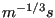
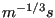
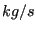
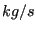

Next: Cantilever beam using beam Up: Simple example problems Previous: Laminar viscous compressible airfoil Contents
That open channel flow can be modeled as a one-dimensional network is maybe not so well known. The governing equation is the Bresse equation (cf. Section 6.9.18) and the available fluid section types are listed in Section 6.6.
The input deck for the present example is shown below.
** ** Structure: channel connecting two reservoirs. ** Test objective: steep slope, frontwater - jump - ** backwater curve ** *NODE,NSET=NALL 1,0.,0.,0. 2,1.,0.,0. 3,2.,0.,0. 4,3.,0.,0. 5,4.,0.,0. 6,5.,0.,0. 7,6.,0.,0. 8,7.,0.,0. 9,8.,0.,0. 10,9.,0.,0. 11,10.,0.,0. *ELEMENT,TYPE=D,ELSET=EALL 1,0,1,2 2,2,3,4 3,4,5,6 4,6,7,8 5,8,9,10 6,10,11,0 *MATERIAL,NAME=WATER *DENSITY 1000. *FLUID CONSTANTS 4217.,1750.E-6,273. *ELSET,ELSET=E1 1,6 *ELSET,ELSET=E2 2 *ELSET,ELSET=E3 3 *ELSET,ELSET=E4 4 *ELSET,ELSET=E5 5 *FLUID SECTION,ELSET=E1,TYPE=CHANNEL INOUT,MATERIAL=WATER *FLUID SECTION,ELSET=E2,TYPE=CHANNEL SLUICE GATE,MANNING,MATERIAL=WATER 10.,0.005,0.8,,3 *FLUID SECTION,ELSET=E3,TYPE=CHANNEL SLUICE OPENING,MANNING,MATERIAL=WATER 10.,0.005,0.1,0.,0.01,2 *FLUID SECTION,ELSET=E4,TYPE=CHANNEL STRAIGHT,MANNING,MATERIAL=WATER 10.,0.005,49.8,0.,0.01,2 *FLUID SECTION,ELSET=E5,TYPE=CHANNEL RESERVOIR,MANNING,MATERIAL=WATER 10.,0.005,0.1,0.,0.01,2 *BOUNDARY 10,2,2,2.7 *BOUNDARY,MASS FLOW 1,1,1,60000. *STEP *HEAT TRANSFER,STEADY STATE *DLOAD EALL,GRAV,9.81,0.,0.,-1. *NODE PRINT,NSET=NALL U *END STEP
It is one of the examples in the CalculiX test suite. The channel is made up of six 3-node network elements (type D) in one long line. The nodes have fictitious coordinates. They do not enter the calculations, however, they will be listed in the .frd file. For a proper visualization with CalculiX GraphiX it may be advantageous to use the correct coordinates. As usual in networks, the final node of the entry and exit element have the label zero. The material is water and is characterized by its density, heat capacity and dynamic viscosity. Next, the elements are stored in appropriate sets (by using *ELSET) for the sake of referencing in the *FLUID SECTION card.
The structure of the channel becomes apparent when analyzing the *FLUID
SECTION cards: upstream there is a sluice gate,
downstream there is a large reservoir and both are connected by a straight
channel. Like most upstream elements the sluice gate actually consists of two
elements: the actual sluice gate element and a sluice opening element. This is
because, although the gate fixes the water depth at its lower end, this water
depth may be overrun by a backwater curve controlled by the downstream water
level. The sluice gate is described by its width (10  , which is constant along
the channel), a slope of 0.005 (also constant along the channel) and a gate
height of 0.8
, which is constant along
the channel), a slope of 0.005 (also constant along the channel) and a gate
height of 0.8  . Furthermore, the label of the downstream gate opening element
has to be provided as well (3). The sluice opening element has the same width
and slope, its length is 0.1
. Furthermore, the label of the downstream gate opening element
has to be provided as well (3). The sluice opening element has the same width
and slope, its length is 0.1  . If a nonpositive length is provided, the true
length is calculated from the nodal coordinates. The angle
. If a nonpositive length is provided, the true
length is calculated from the nodal coordinates. The angle  is zero,
which means that the cross section is rectangular and not trapezoidal. Since
the parameter MANNING has been used on the *FLUID SECTION card, the next
parameter (0.01 ) is the Manning coefficient. Finally, the label of the upstream
sluice gate element is given (2). The constants for the straight channel
element can be checked in Section 6.6. Important
here is the length of 49.8
is zero,
which means that the cross section is rectangular and not trapezoidal. Since
the parameter MANNING has been used on the *FLUID SECTION card, the next
parameter (0.01 ) is the Manning coefficient. Finally, the label of the upstream
sluice gate element is given (2). The constants for the straight channel
element can be checked in Section 6.6. Important
here is the length of 49.8  . The last element, the reservoir, is again a very
short element (length 0.1
. The last element, the reservoir, is again a very
short element (length 0.1  ). The length of elements such as the sluice opening
or reservoir element, which do not really have a physical length, should be
kept small.
). The length of elements such as the sluice opening
or reservoir element, which do not really have a physical length, should be
kept small.
Next, the boundary conditions are defined: the reservoir fluid depth is 2.7  ,
whereas the mass flow is 60000 . Network calculations in CalculiX are a special
case of steady state heat transfer calculations, therefore the *HEAT TRANSFER,
STEADY STATE card is used. The prevailing force is gravity.
,
whereas the mass flow is 60000 . Network calculations in CalculiX are a special
case of steady state heat transfer calculations, therefore the *HEAT TRANSFER,
STEADY STATE card is used. The prevailing force is gravity.
When running CalculiX a message appears that there is a hydraulic jump at
relative location 0.67 in element 4 (the straight channel element). This is
also clear in Figure 37, where the channel has been drawn to
scale. The sluice gate is located at x=5  , the reservoir starts at x=55
, the reservoir starts at x=55  . The
bottom of the channel is shaded black. The water level behind the gate was not
prescribed and is one of the results of the calculation: 3.667
. The
bottom of the channel is shaded black. The water level behind the gate was not
prescribed and is one of the results of the calculation: 3.667  . The water
level at the gate is controlled by its height of 0.8
. The water
level at the gate is controlled by its height of 0.8  . A frontwater curve
(i.e. a curve controlled by the upstream conditions - the gate)
develops downstream and connects to a backwater curve (i.e. a curve controlled
by the downstream conditions - the reservoir) by a hydraulic jump at a x-value
of 38.5
. A frontwater curve
(i.e. a curve controlled by the upstream conditions - the gate)
develops downstream and connects to a backwater curve (i.e. a curve controlled
by the downstream conditions - the reservoir) by a hydraulic jump at a x-value
of 38.5  . In other words, the jump connects the upstream supercritical flow
to the downstream subcritical flow. The critical depth is illustrated in the
figure by a dashed line. It is the depth for which the Froude number is 1:
critical flow.
. In other words, the jump connects the upstream supercritical flow
to the downstream subcritical flow. The critical depth is illustrated in the
figure by a dashed line. It is the depth for which the Froude number is 1:
critical flow.
In channel flow, the degrees of freedom for the mechanical displacements are reserved for the mass flow, the water depth and the critical depth, respectively. Therefore, the option U underneath the *NODE PRINT card will lead to exactly this information in the .dat file. The same information can be stored in the .frd file by selecting MF, DEPT and HCRI underneath the *NODE FILE card.